Min/Max, Bounds & Lattice
Pada sesi ini, kita akan mempelajari konsep lanjutan dari Himpunan Terurut Sebagian (POSET). Materi ini mencakup penentuan elemen minimal & maksimal, elemen terkecil (least) & terbesar (greatest), batas bawah (lower bound) & batas atas (upper bound), supremum (LUB) & infimum (GLB), serta konsep Lattice.
- Minimal Element: Elemen di dasar diagram Hasse yang tidak memiliki elemen lain di bawahnya.
- Maximal Element: Elemen di puncak diagram Hasse yang tidak memiliki elemen lain di atasnya.
- Least Element (Minimum): Elemen tunggal di dasar yang harus berelasi ke semua elemen lain.
- Greatest Element (Maksimum): Elemen tunggal di puncak yang harus dihubungi oleh semua elemen lain.
- Lower & Upper Bound: Batas bawah dan batas atas untuk subset dari poset.
- GLB & LUB: Batas bawah terbesar (Infimum) dan batas atas terkecil (Supremum).
- Lattice: Poset di mana setiap pasangan elemen memiliki GLB dan LUB unik yang tidak kosong.
1. Minimal & Maximal Element
Dalam sebuah POSET (Partial Ordered Set) $(S, \mathcal{R})$, kita sering kali ingin mengidentifikasi elemen-elemen kunci yang berada di ujung bawah (dasar) atau ujung atas (puncak) struktur tersebut.
Definisi Elemen Minimal
Sebuah elemen $x \in S$ disebut elemen minimal apabila tidak ada elemen lain $y \in S$ sehingga $y \mathcal{R} x$ (untuk $y \neq x$).
Visualisasi Diagram Hasse: Elemen minimal merupakan titik-titik paling bawah pada diagram Hasse yang tidak memiliki garis mengarah ke bawahnya.
Definisi Elemen Maksimal
Sebuah elemen $x \in S$ disebut elemen maksimal apabila tidak ada elemen lain $y \in S$ sehingga $x \mathcal{R} y$ (untuk $y \neq x$).
Visualisasi Diagram Hasse: Elemen maksimal merupakan titik-titik paling atas pada diagram Hasse yang tidak memiliki garis mengarah ke atasnya.
💡 Catatan Penting: Sebuah POSET bisa memiliki lebih dari satu elemen minimal dan lebih dari satu elemen maksimal, tergantung pada strukturnya.
Tentukan seluruh elemen minimal dari diagram Hasse di bawah ini!
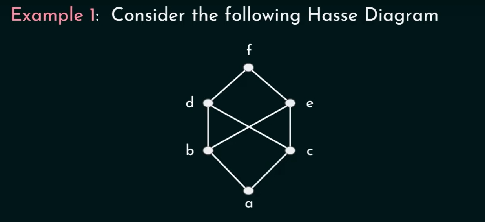
Elemen minimal ditandai dengan lingkaran merah pada diagram Hasse berikut:
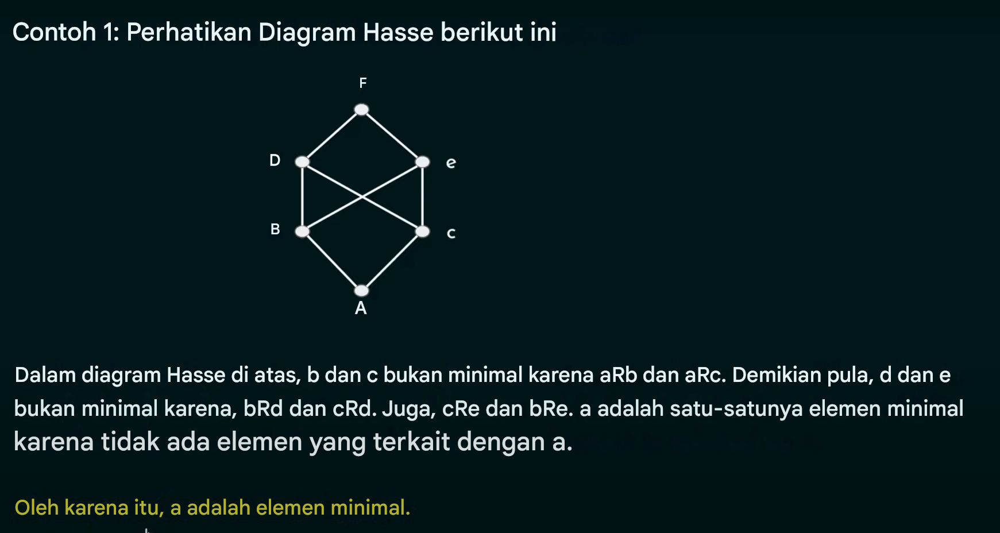
Penjelasan: Elemen-elemen yang dilingkari merupakan titik paling bawah yang tidak memiliki cabang garis ke bawahnya. Oleh karena itu, tidak ada elemen lain yang mendahului elemen-elemen tersebut.
Tentukan seluruh elemen minimal dari diagram Hasse berikut!
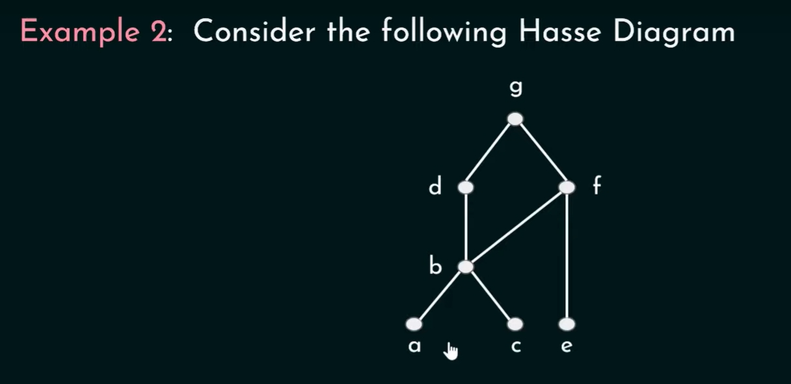
Elemen minimal ditandai dengan lingkaran merah pada diagram Hasse berikut:
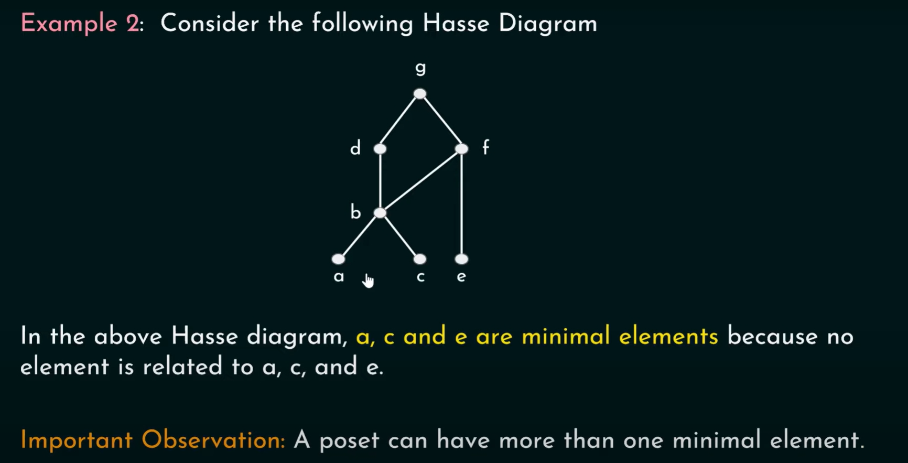
Penjelasan: Seperti konsep dasar minimal element, cari semua titik paling bawah yang tidak memiliki koneksi garis ke elemen yang lebih rendah. Titik-titik yang dilingkari merah adalah jawaban dari soal ini.
Tentukan seluruh elemen maksimal dari diagram Hasse di bawah ini!
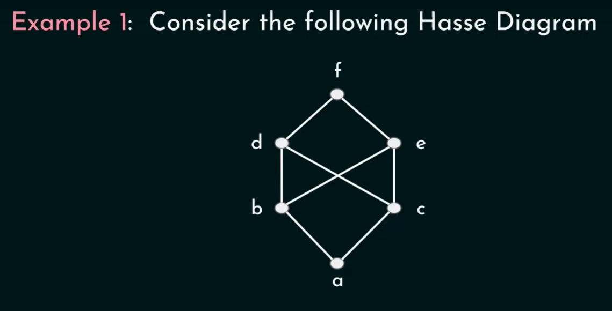
Penjelasan: Elemen maksimal adalah elemen yang berada di posisi paling atas pada diagram Hasse dan tidak memiliki garis yang mengarah ke atasnya lagi. Pada diagram di atas, carilah semua titik puncak yang tidak terhubung ke elemen di atasnya. Titik-titik puncak tersebut merupakan elemen maksimal dari poset.
Tentukan seluruh elemen maksimal dari diagram Hasse berikut!
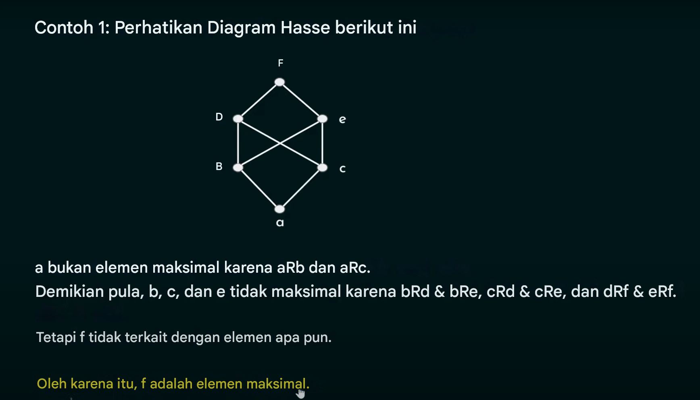
Elemen maksimal ditandai dengan lingkaran merah pada diagram Hasse berikut:
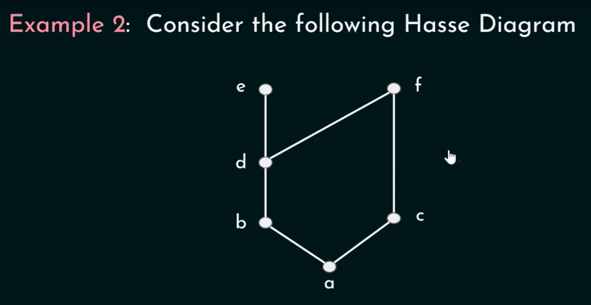
Penjelasan: Titik-titik yang dilingkari merah terletak di bagian paling atas diagram Hasse dan tidak memiliki garis yang menghubungkannya ke elemen di atasnya lagi. Oleh karena itu, titik-titik tersebut adalah elemen maksimal.
Tentukan semua elemen minimal dan elemen maksimal dari diagram Hasse di bawah ini!
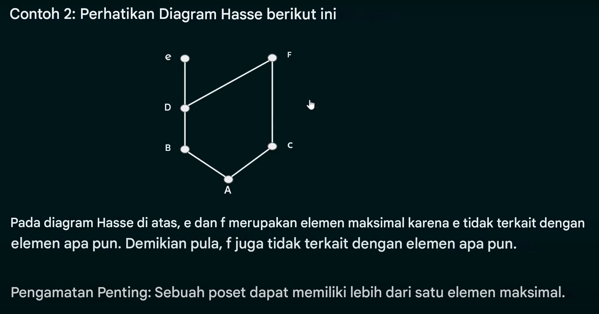
Elemen minimal dan maksimal ditandai dengan lingkaran berwarna pada diagram Hasse berikut:
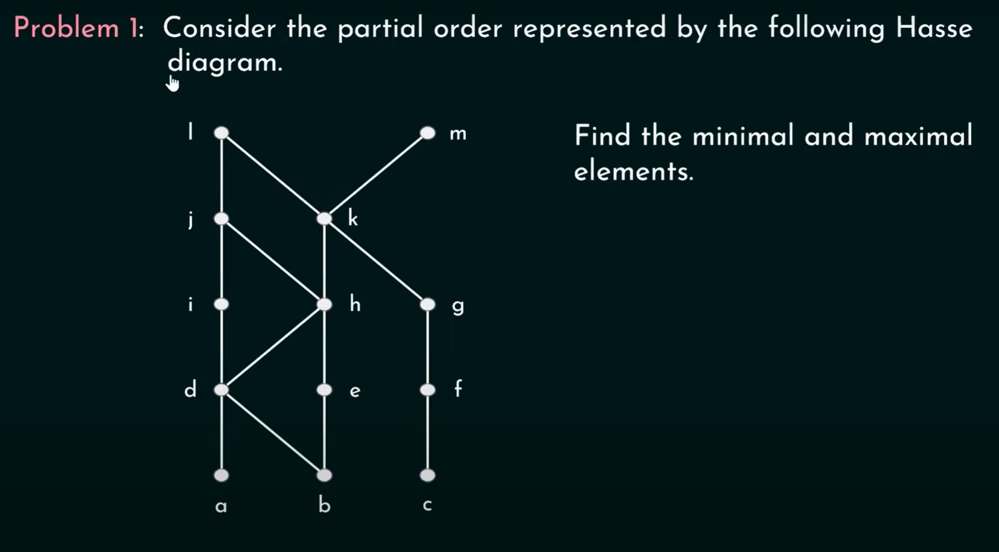
Penjelasan: Masing-masing lingkaran mewakili batas terluar poset:
- Elemen Minimal: Elemen-elemen paling bawah yang tidak memiliki relasi dari bawah.
- Elemen Maksimal: Elemen-elemen paling atas yang tidak memiliki relasi ke atas lagi.
Tentukan elemen maksimal dan elemen minimal dari poset $(S, |)$ dengan himpunan: $$S = \{2, 3, 5, 10, 11, 15, 25\}$$ di mana relasi $|$ adalah relasi "habis membagi" (divisibility)!
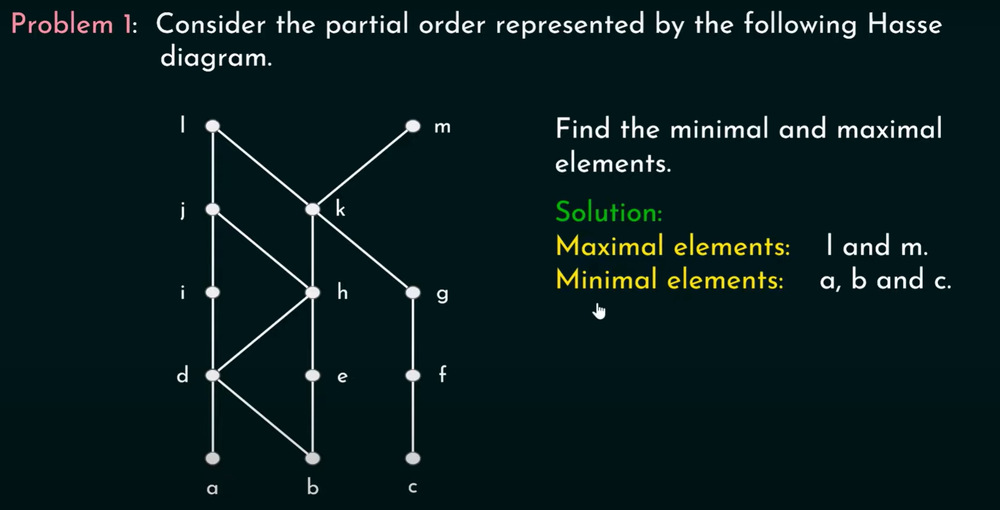
Berikut adalah gambar diagram Hasse dan representasi elemen maksimal/minimalnya:
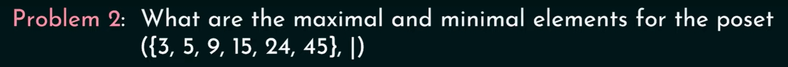
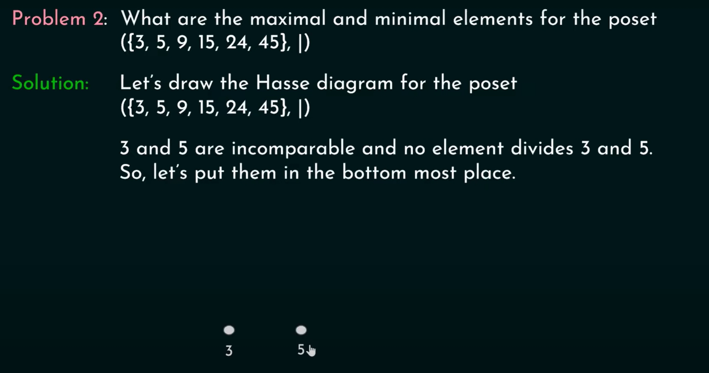
Analisis Langkah Demi Langkah:
1. Elemen Minimal: Elemen $x \in S$ yang tidak dapat dibagi habis oleh elemen lain $y \in S$ ($y \neq x$).
- 2 tidak habis dibagi oleh elemen mana pun di $S$.
- 3 tidak habis dibagi oleh elemen mana pun di $S$.
- 5 tidak habis dibagi oleh elemen mana pun di $S$.
- 11 tidak habis dibagi oleh elemen mana pun di $S$.
- Sedangkan 10 (habis dibagi 2 dan 5), 15 (habis dibagi 3 dan 5), dan 25 (habis dibagi 5) bukan elemen minimal karena ada elemen di bawahnya.
Maka, Elemen Minimal = $\{2, 3, 5, 11\}$.
2. Elemen Maksimal: Elemen $x \in S$ yang tidak membagi habis elemen lain $y \in S$ ($y \neq x$).
- 10 tidak membagi habis elemen lain di $S$ (kelipatannya tidak ada di $S$).
- 11 tidak membagi habis elemen lain di $S$.
- 15 tidak membagi habis elemen lain di $S$.
- 25 tidak membagi habis elemen lain di $S$.
- Sedangkan 2 (membagi 10), 3 (membagi 15), dan 5 (membagi 10, 15, 25) bukan elemen maksimal karena ada elemen di atasnya.
Maka, Elemen Maksimal = $\{10, 11, 15, 25\}$.
2. Least & Greatest Element (Terkecil & Terbesar)
Konsep elemen terkecil dan terbesar berbeda dengan elemen minimal dan maksimal. Elemen minimal/maksimal bisa berjumlah banyak, namun elemen terkecil/terbesar bersifat unik (hanya ada maksimal satu jika ada).
Definisi Least Element (Elemen Terkecil / Minimum)
Sebuah elemen $x \in S$ disebut least element dari poset $(S, \mathcal{R})$ apabila: $$\forall y \in S, x \mathcal{R} y$$ Sifat: Elemen ini harus berada di paling dasar dan memiliki hubungan relasi langsung/tidak langsung ke semua elemen lain dalam poset. Elemen ini bersifat unik (maksimal satu).
Definisi Greatest Element (Elemen Terbesar / Maksimum)
Sebuah elemen $x \in S$ disebut greatest element dari poset $(S, \mathcal{R})$ apabila: $$\forall y \in S, y \mathcal{R} x$$ Sifat: Semua elemen dalam poset harus memiliki hubungan relasi langsung/tidak langsung ke arah elemen terbesar ini. Elemen terbesar berada di puncak diagram Hasse dan bersifat unik (maksimal satu).
⚠️ Hubungan Penting:
- Jika sebuah poset memiliki lebih dari satu elemen minimal, maka poset tersebut tidak memiliki least element.
- Jika sebuah poset memiliki lebih dari satu elemen maksimal, maka poset tersebut tidak memiliki greatest element.
- Least element pasti merupakan elemen minimal, dan greatest element pasti merupakan elemen maksimal. Namun, kebalikannya belum tentu benar!
Tentukan apakah poset yang direpresentasikan dalam Hasse diagram di bawah ini memiliki elemen maksimum dan elemen minimum? Jika ya, sebutkan vertex-nya!
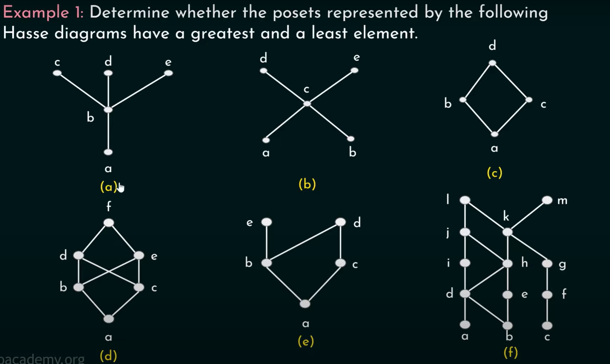
Berdasarkan analisis diagram Hasse:
- Elemen Terkecil (Minimum / Least Element): Tidak ada elemen tunggal di bagian bawah yang menghubungkan ke semua elemen lainnya.
- Elemen Terbesar (Maksimum / Greatest Element): Tidak ada elemen tunggal di puncak yang menerima garis dari semua elemen di bawahnya secara universal.
Kesimpulan: Poset ini tidak memiliki elemen maksimum maupun elemen minimum.
Cari elemen terbesar dan elemen terkecil dari poset berikut: $$(\{2, 4, 6, 9, 12, 18, 27, 36, 48, 60, 72\}, |)$$
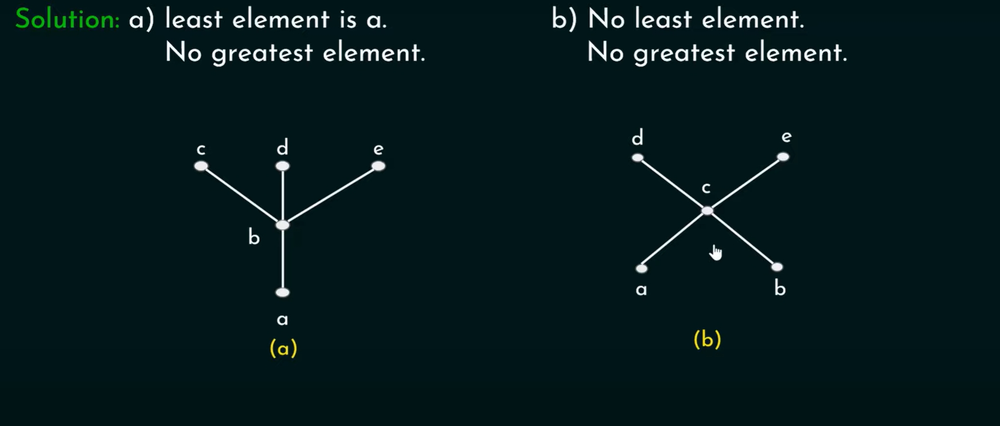
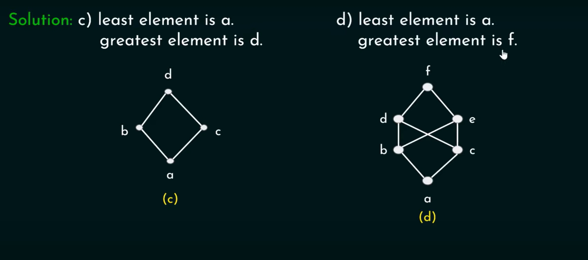
Mari kita visualisasikan poset ini menggunakan diagram Hasse terlebih dahulu untuk memudahkan analisis:
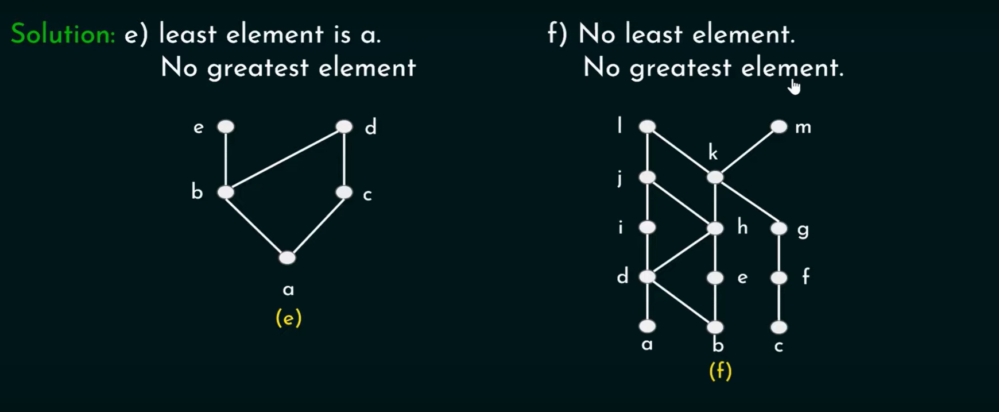
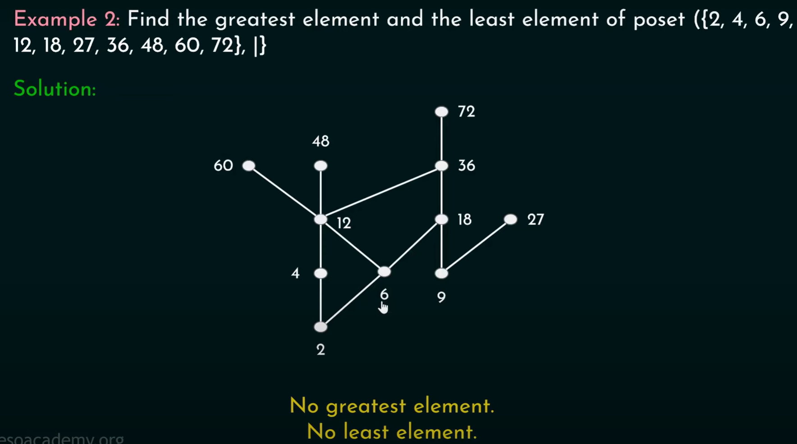
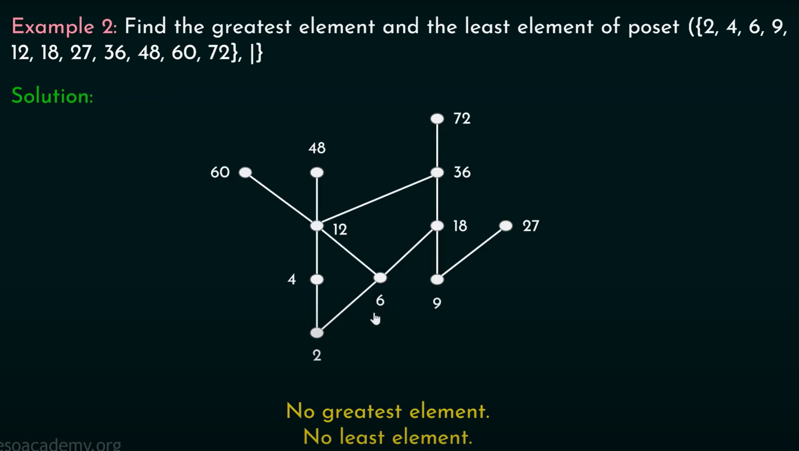
Penjelasan Logika Matematika:
1. Elemen Terkecil (Minimum / Least Element):
- Elemen terkecil $x$ haruslah elemen yang membagi habis seluruh anggota himpunan lainnya.
- Elemen-elemen minimal dari poset ini adalah 2 dan 9 (karena tidak ada elemen lain di poset yang membagi 2 atau 9).
- Keberadaan dua elemen minimal (2 dan 9) berimplikasi tidak adanya satu elemen minimal unik yang dapat membagi semua elemen lainnya secara bersamaan (2 tidak membagi 9, dan 9 tidak membagi 2).
- Oleh karena itu, elemen terkecil (minimum) tidak ada.
2. Elemen Terbesar (Greatest / Maksimum):
- Elemen terbesar $y$ haruslah elemen yang dapat dibagi habis oleh semua anggota himpunan lainnya.
- Elemen-elemen maksimal dari poset ini adalah 48, 60, dan 72.
- Karena terdapat lebih dari satu elemen maksimal, maka tidak ada elemen terbesar unik yang dapat menampung pembagian dari semua elemen di bawahnya.
- Oleh karena itu, elemen terbesar (maksimum) tidak ada.
3. Lower & Upper Bound
Berbeda dengan minimal/maximal yang mengacu pada seluruh poset, konsep Bound (Batas) didefinisikan berdasarkan suatu subset (bagian kecil) $T$ dari poset induk $S$.
Definisi Lower Bound (Batas Bawah)
Misalkan $(S, \mathcal{R})$ adalah poset dan $T \subseteq S$. Sebuah elemen $x \in S$ disebut sebagai lower bound (batas bawah) dari $T$ jika: $$\forall y \in T, x \mathcal{R} y$$ artinya $x$ harus berada di bawah atau terhubung ke seluruh elemen yang ada di dalam subset $T$.
Definisi Upper Bound (Batas Atas)
Misalkan $(S, \mathcal{R})$ adalah poset dan $T \subseteq S$. Sebuah elemen $x \in S$ disebut sebagai upper bound (batas atas) dari $T$ jika: $$\forall y \in T, y \mathcal{R} x$$ artinya $x$ harus berada di atas atau terhubung dari seluruh elemen yang ada di dalam subset $T$.
💡 Catatan: Batas bawah ($x$) dan batas atas ($x$) tidak harus merupakan bagian dari subset $T$, tetapi ia harus merupakan elemen dari poset induk $S$.
Tentukan lower bound (LB) dan upper bound (UB) dari subset-subset berikut pada poset yang direpresentasikan dengan diagram Hasse di bawah:
- Subset $T_1 = \{a, b, c\}$
- Subset $T_2 = \{j, h\}$
- Subset $T_3 = \{a, b, c, d\}$
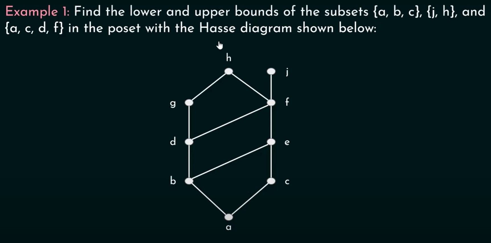
Berikut adalah visualisasi penyelesaian untuk batas bawah dan batas atas masing-masing subset:
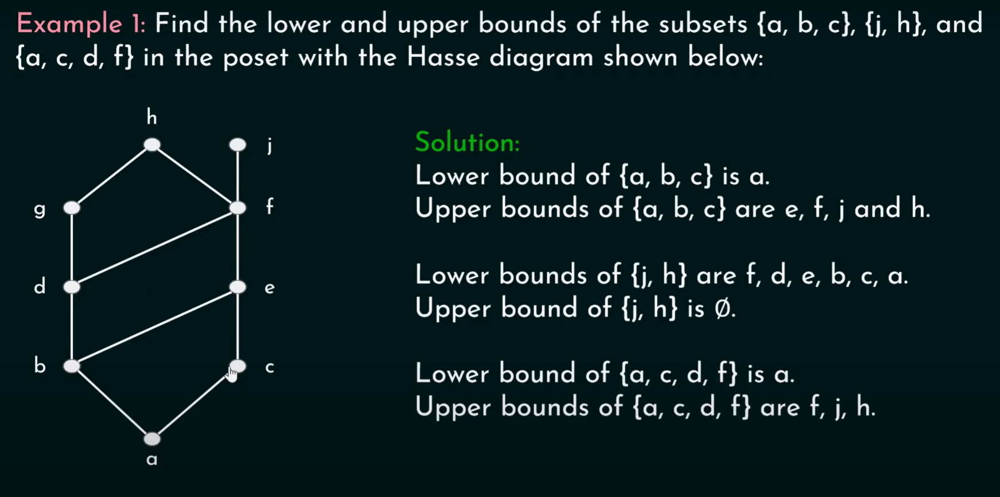
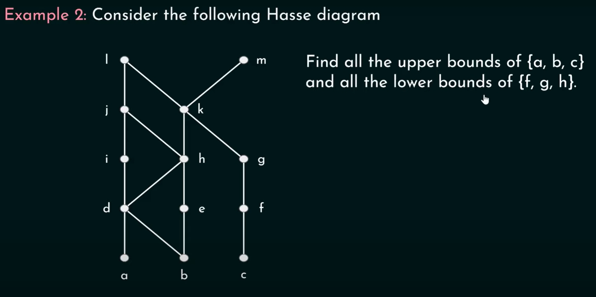
Metode Analisis: Cari elemen di $S$ yang memiliki garis ke semua elemen subset (untuk Upper Bound) atau elemen yang dituju oleh garis dari semua elemen subset (untuk Lower Bound).
Perhatikan Hasse Diagram berikut. Tentukan semua upper bound dari $\{a, b, c\}$ dan semua lower bound dari $\{f, g, h\}$!
Hasil pencarian batas atas dan batas bawah ditunjukkan pada diagram di bawah ini:
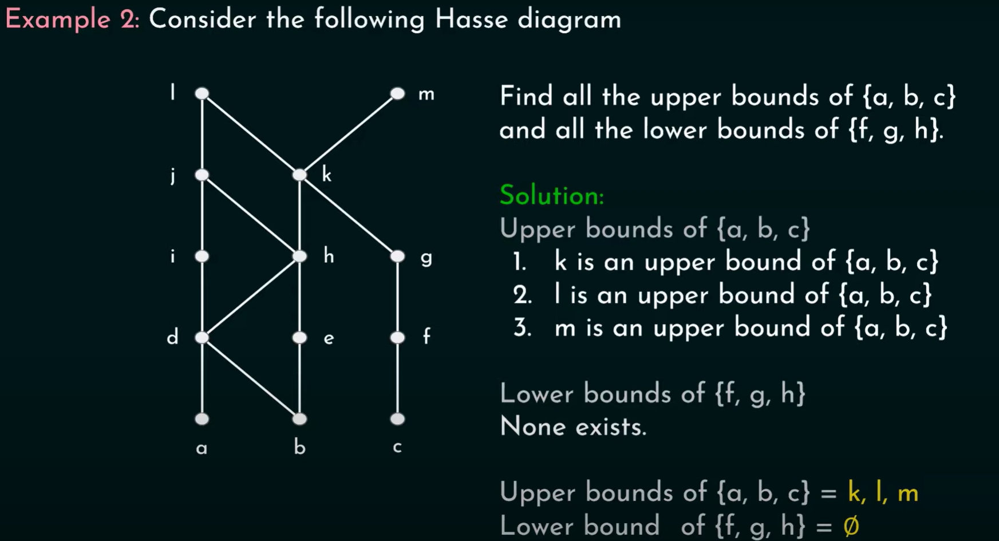
Analisis UB $\{a, b, c\}$: Elemen-elemen yang posisinya berada di atas $a, b,$ dan $c$ serta terhubung dengan ketiganya adalah batas atas.
Analisis LB $\{f, g, h\}$: Elemen-elemen yang posisinya berada di bawah $f, g,$ dan $h$ serta terhubung dengan ketiganya adalah batas bawah.
Carilah semua upper bound (UB) dari $\{2, 9\}$ dan lower bound (LB) dari $\{60, 72\}$ pada poset: $$(\{2, 4, 6, 9, 12, 18, 27, 36, 48, 60, 72\}, |)$$
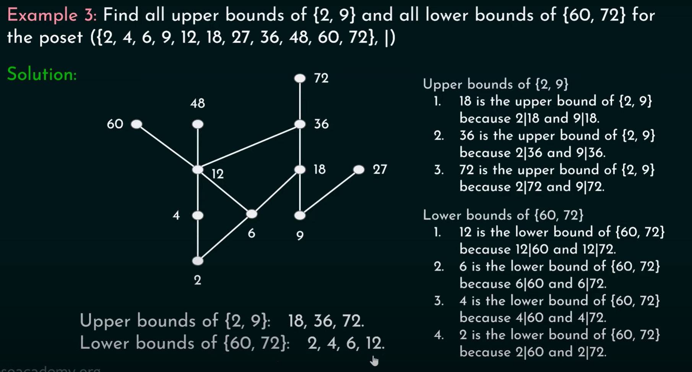
Perhitungan Matematis:
1. Upper Bound dari $\{2, 9\}$:
- Elemen $x$ harus habis dibagi oleh 2 dan 9.
- Ini berarti $x$ harus kelipatan dari Kelipatan Persekutuan Terkecil (KPK) dari 2 dan 9, yaitu $\text{KPK}(2, 9) = 18$.
- Elemen-elemen di poset yang merupakan kelipatan dari 18 adalah: $\{18, 36, 72\}$.
- Maka, UB dari $\{2, 9\} = \{18, 36, 72\}$.
2. Lower Bound dari $\{60, 72\}$:
- Elemen $x$ harus membagi habis 60 dan 72.
- Ini berarti $x$ harus merupakan pembagi dari Faktor Persekutuan Terbesar (FPB) dari 60 dan 72, yaitu $\text{FPB}(60, 72) = 12$.
- Elemen-elemen di poset yang merupakan pembagi dari 12 (membagi habis 12) adalah: $\{2, 4, 6, 12\}$.
- Maka, LB dari $\{60, 72\} = \{2, 4, 6, 12\}$.
4. LUB (Supremum) & GLB (Infimum)
Setelah kita bisa menentukan himpunan dari seluruh batas atas (UB) dan batas bawah (LB) dari suatu subset, kita bisa mencari elemen ekstrem yang paling mendekati subset tersebut.
Least Upper Bound (LUB / Supremum / Join / $\vee$)
LUB dari subset $T$ adalah elemen terkecil (minimum) dari himpunan batas atas (UB) milik $T$. $$\text{LUB}(T) = \text{minimum } \{UB(T)\}$$ Elemen LUB harus unik. Jika batas atas terkecilnya tidak unik atau tidak ada, maka LUB tidak ada.
Greatest Lower Bound (GLB / Infimum / Meet / $\wedge$)
GLB dari subset $T$ adalah elemen terbesar (maksimum) dari himpunan batas bawah (LB) milik $T$. $$\text{GLB}(T) = \text{maksimum } \{LB(T)\}$$ Elemen GLB harus unik. Jika batas bawah terbesarnya tidak unik atau tidak ada, maka GLB tidak ada.
💡 Cara Menghafal Cepat (Konsep Kebalikan):
- Upper (Atas) berpasangan dengan Least (Terkecil) $\rightarrow$ LUB (Supremum)
- Lower (Bawah) berpasangan dengan Greatest (Terbesar) $\rightarrow$ GLB (Infimum)
Carilah greatest lower bound (GLB) dan least upper bound (LUB) dari subset $\{b, d, g\}$, jika ada, pada poset yang digambarkan berikut!
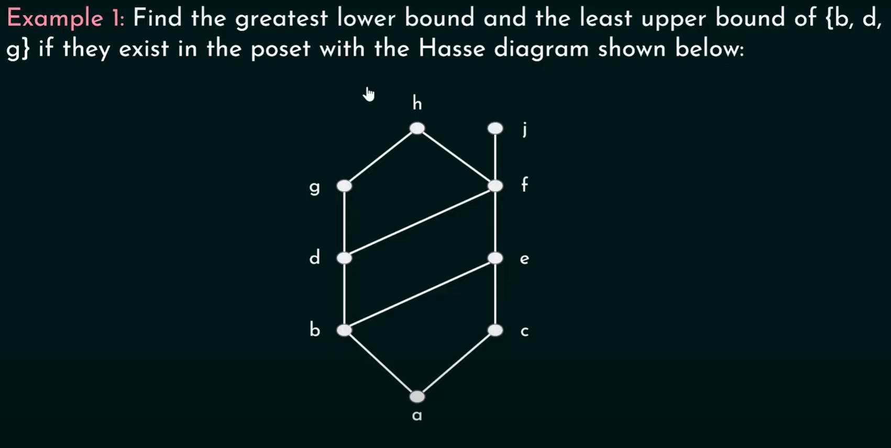
Hasil analisis pencarian GLB & LUB dapat dilihat pada diagram berikut:
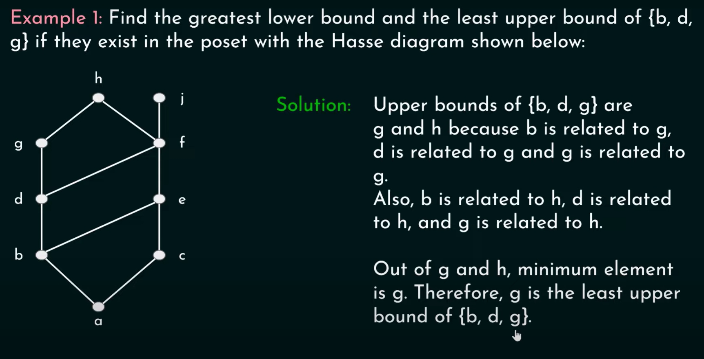
Cara Pengerjaan:
1. Cari semua batas atas (UB) dari $\{b, d, g\}$, kemudian cari elemen terkecilnya untuk memperoleh LUB.
2. Cari semua batas bawah (LB) dari $\{b, d, g\}$, kemudian cari elemen terbesarnya untuk memperoleh GLB.
Carilah least upper bound (LUB) dari $\{a, b, c\}$ dan greatest lower bound (GLB) dari $\{f, g, h\}$, jika ada!
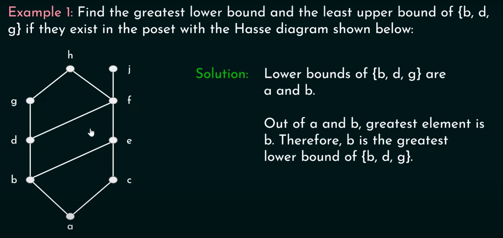
Hasil analisis pencarian LUB & GLB dapat dilihat pada diagram berikut:
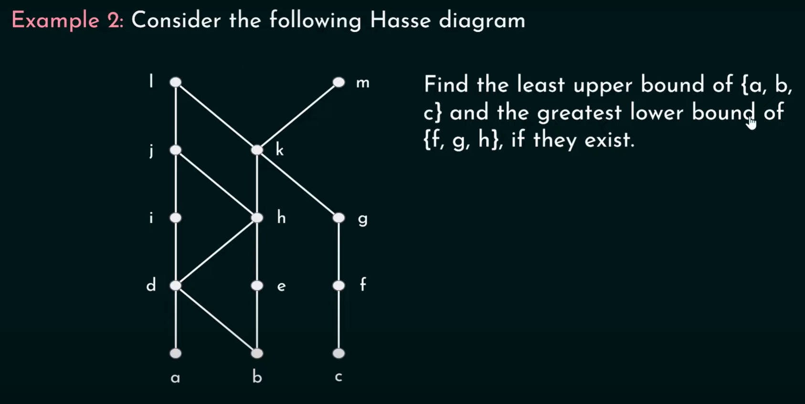
Carilah least upper bound (LUB) dari $\{2, 9\}$ dan greatest lower bound (GLB) dari $\{60, 72\}$ untuk poset: $$(\{2, 4, 6, 9, 12, 18, 27, 36, 48, 60, 72\}, |)$$
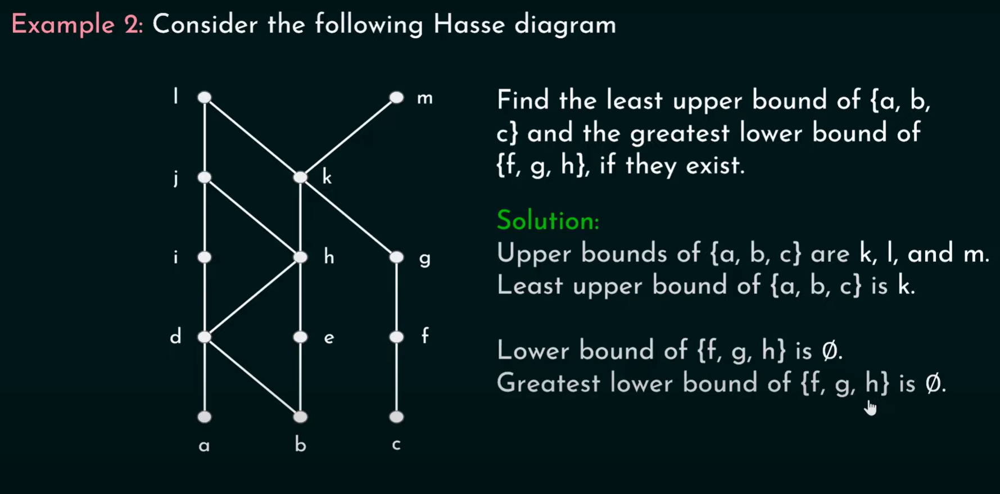
Penyelesaian secara visual dan matematis:
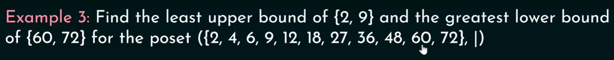
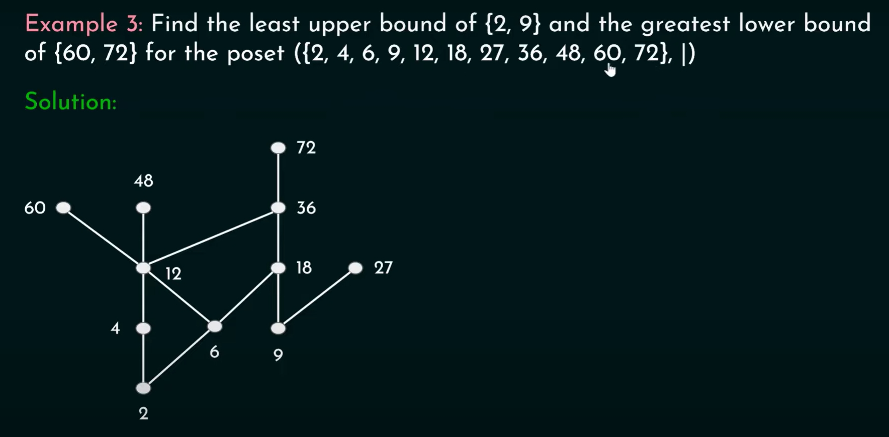
Analisis Detail:
1. LUB dari $\{2, 9\}$:
- Himpunan batas atas (UB) dari $\{2, 9\}$ adalah $\{18, 36, 72\}$.
- LUB adalah nilai terkecil di antara himpunan UB tersebut dalam poset terurut pembagian.
- Karena 18 membagi habis 36 dan 72, maka 18 adalah elemen terkecil dari UB tersebut.
- Maka, LUB$(\{2, 9\}) = 18$.
2. GLB dari $\{60, 72\}$:
- Himpunan batas bawah (LB) dari $\{60, 72\}$ adalah $\{2, 4, 6, 12\}$.
- GLB adalah nilai terbesar di antara himpunan LB tersebut dalam poset terurut pembagian.
- Karena 2 membagi 12, 4 membagi 12, dan 6 membagi 12, maka 12 adalah elemen terbesar dari LB tersebut.
- Maka, GLB$(\{60, 72\}) = 12$.
Bagaimanakah hubungan comparable pairs dengan pencarian bound (LUB & GLB)? Jelaskan dan buktikan dengan contoh kasus di bawah ini!
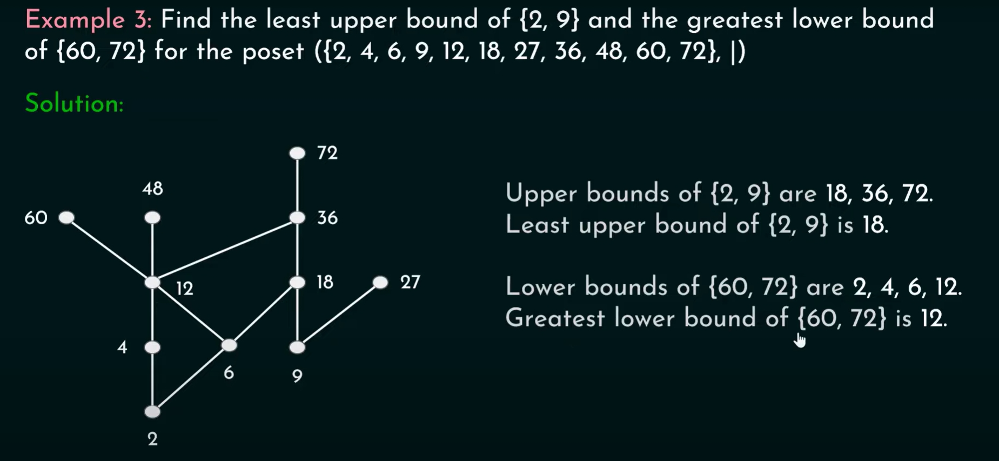
Detail analisis mengenai keberadaan lower bound dan upper bound dari comparable pairs:
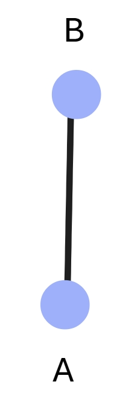
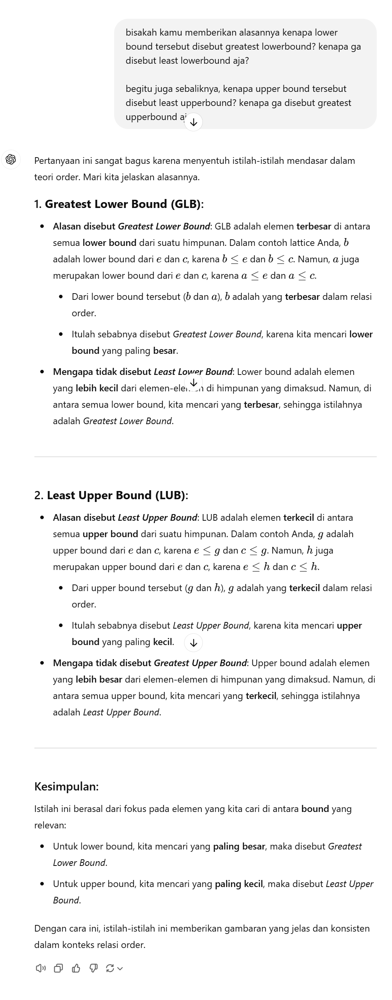
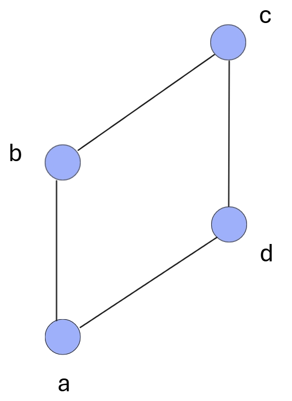
Kesimpulan Utama:
Jika pasangan elemen merupakan comparable pairs (saling berelasi secara langsung), maka pasangan tersebut sudah pasti memiliki GLB dan LUB (dan dengan kata lain memenuhi kriteria Lattice).
Sebagai contoh:
- Untuk pasangan $(a, b)$ yang comparable di mana $a \prec b$, maka $\text{GLB}(a, b) = a$ (greatest lower bound) dan $\text{LUB}(a, b) = b$ (least upper bound).
5. Lattice
Sekarang kita masuk ke konsep puncak dari relasi terurut sebagian, yaitu Lattice (Kisi).
Definisi Lattice
Sebuah POSET $(S, \mathcal{R})$ disebut Lattice jika dan hanya jika untuk setiap pasangan elemen $x, y \in S$,
pasangan tersebut memiliki:
1. Greatest Lower Bound (GLB) yang tidak kosong dan unik. (Meet Semilattice: $\text{GLB}(x, y) \neq \emptyset$)
2. Least Upper Bound (LUB) yang tidak kosong dan unik. (Join Semilattice: $\text{LUB}(x, y) \neq \emptyset$)
⚠️ Syarat Mutlak Lattice:
Aturan ini menggunakan logika DAN (AND) serta kuantor universal UNTUK SEMUA ($\forall$). Artinya, seluruh pasangan elemen tanpa terkecuali harus memiliki GLB dan LUB. Jika ada satu saja pasangan elemen yang tidak memiliki GLB atau tidak memiliki LUB, maka poset tersebut bukan Lattice.
Periksa apakah diagram Hasse di bawah ini merupakan sebuah Lattice!
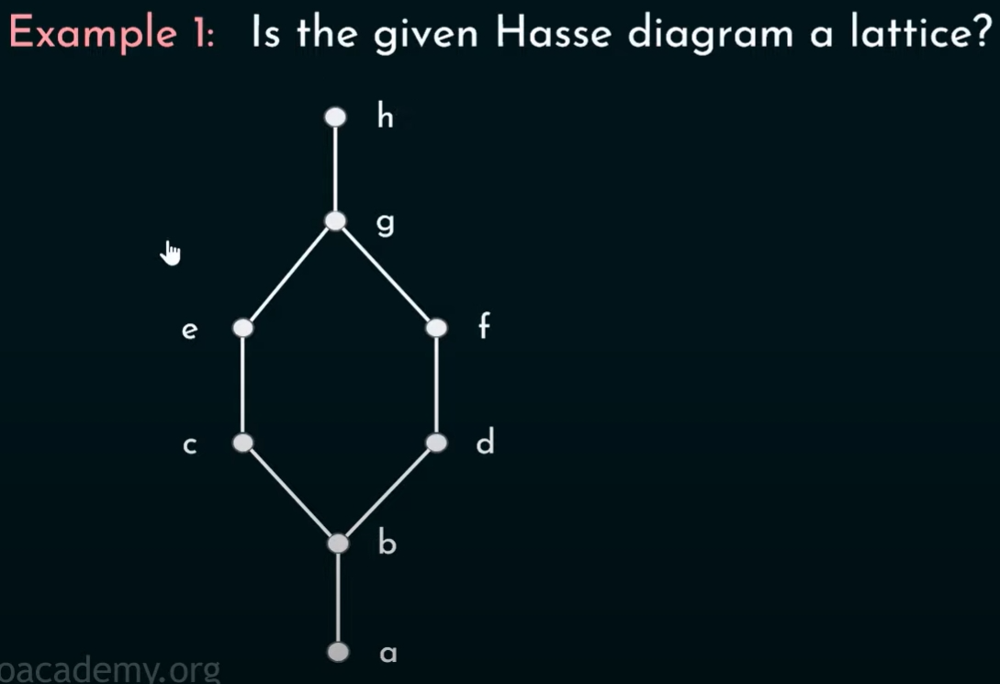
Hasil pengujian dan penjelasan dapat dilihat pada gambar di bawah ini:
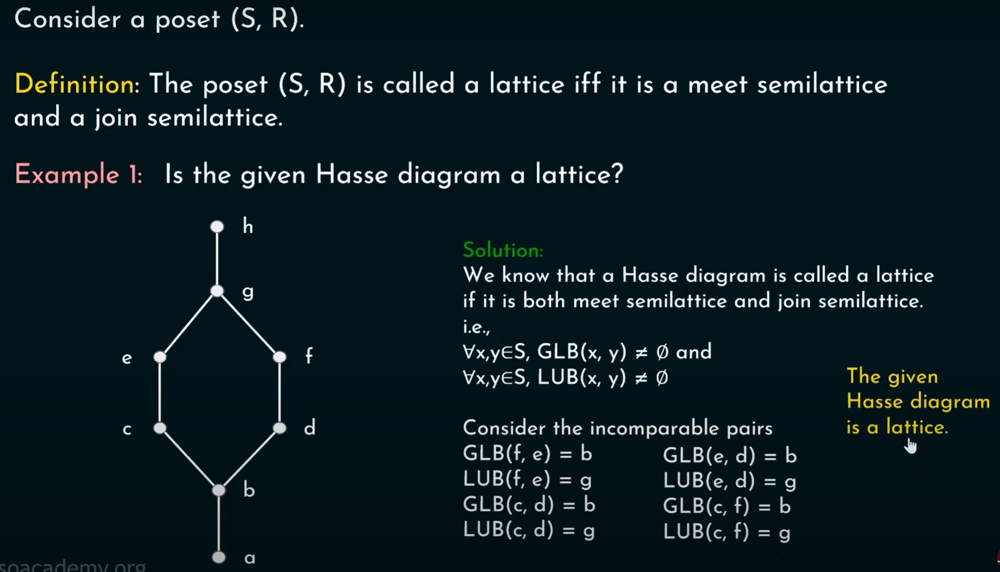
Analisis Singkat: Periksa apakah semua titik memiliki pasangan yang bertemu di satu titik atas (LUB) dan bertemu di satu titik bawah (GLB).
Periksa apakah diagram Hasse berikut merupakan sebuah Lattice!
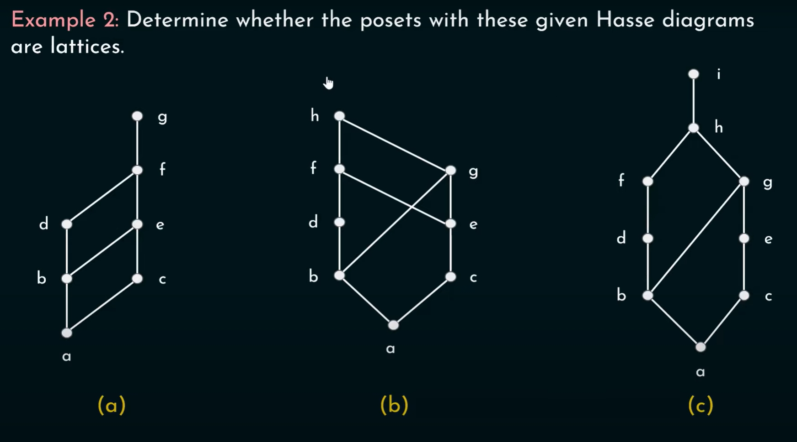
Hasil pengujian dan penjelasan dapat dilihat pada gambar di bawah ini:
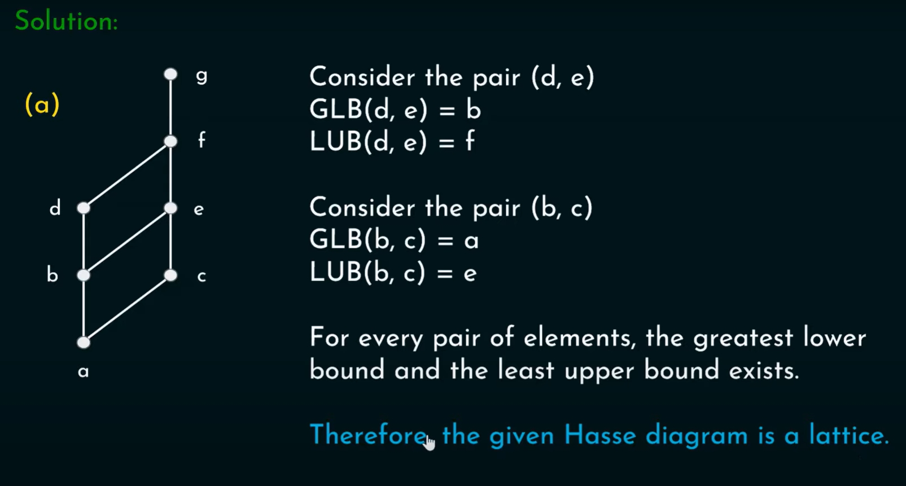
Periksa dengan detail apakah diagram Hasse berikut merupakan sebuah Lattice!
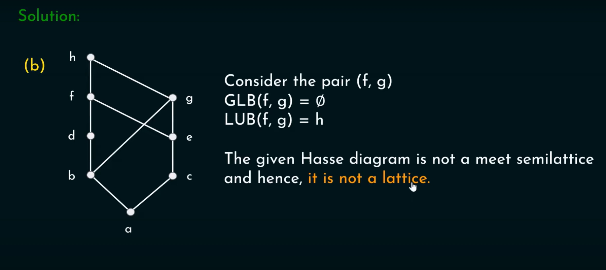
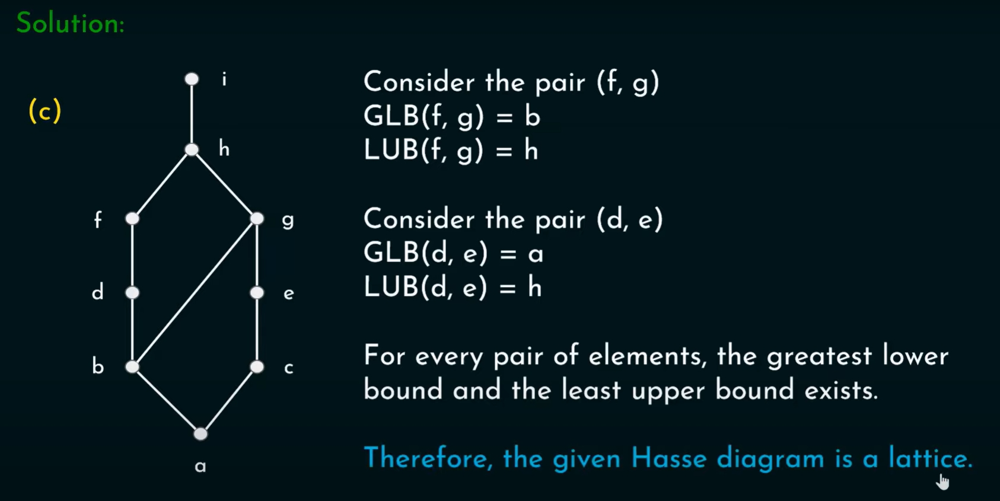
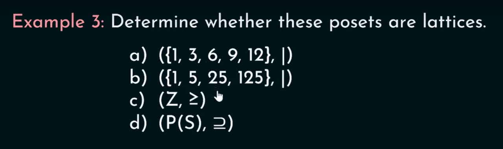
Berikut adalah lembar analisis langkah demi langkah untuk membuktikan kriteria Lattice:
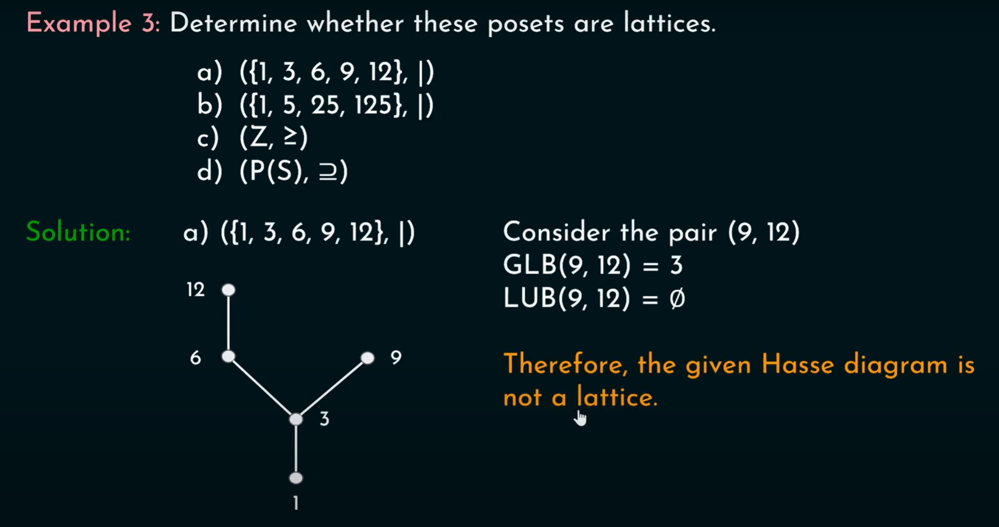
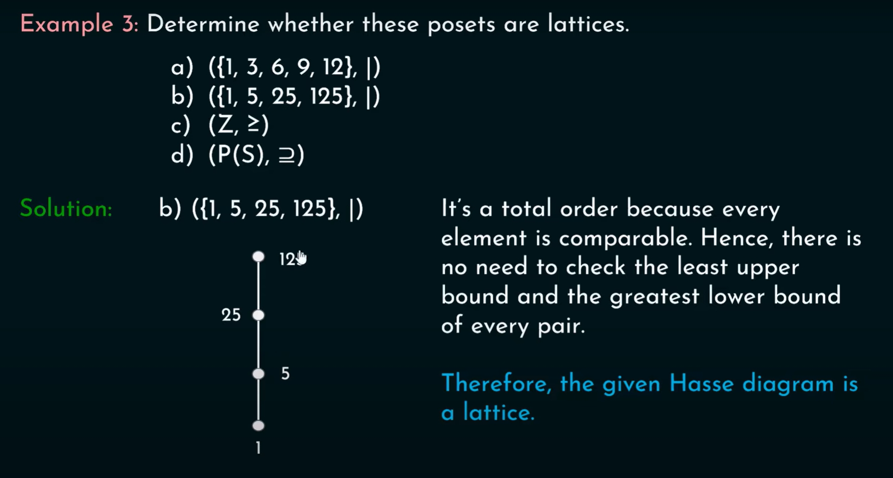
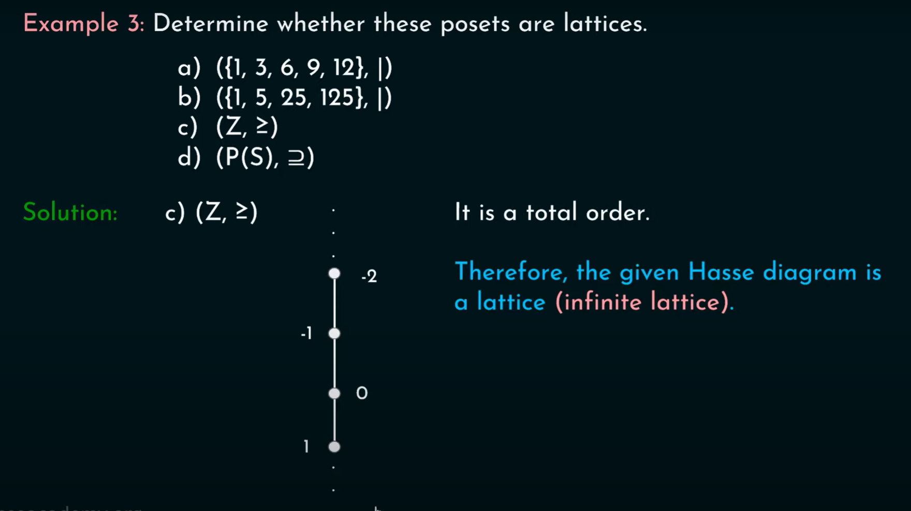
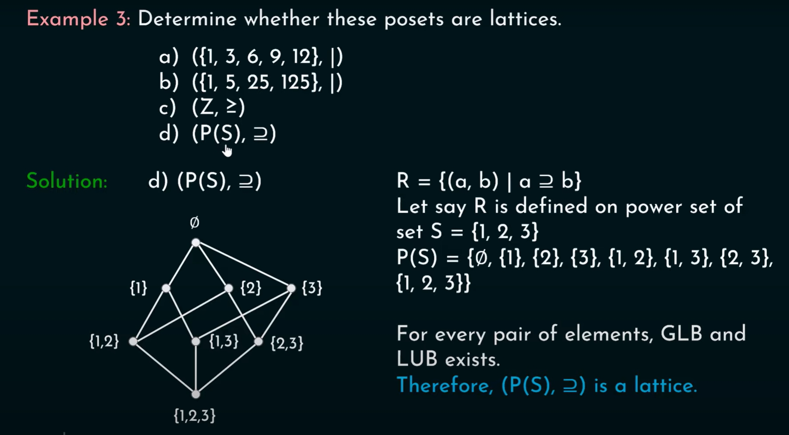
Kesimpulan: Dengan memetakan seluruh kombinasi pasangan elemen, kita dapat melihat apakah terdapat pasangan elemen yang melanggar ketentuan (memiliki LUB/GLB kosong atau tidak unik). Jika seluruh pasangan lolos uji, maka poset tersebut sah sebagai Lattice.